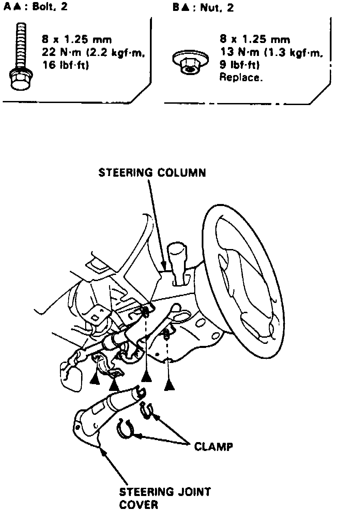
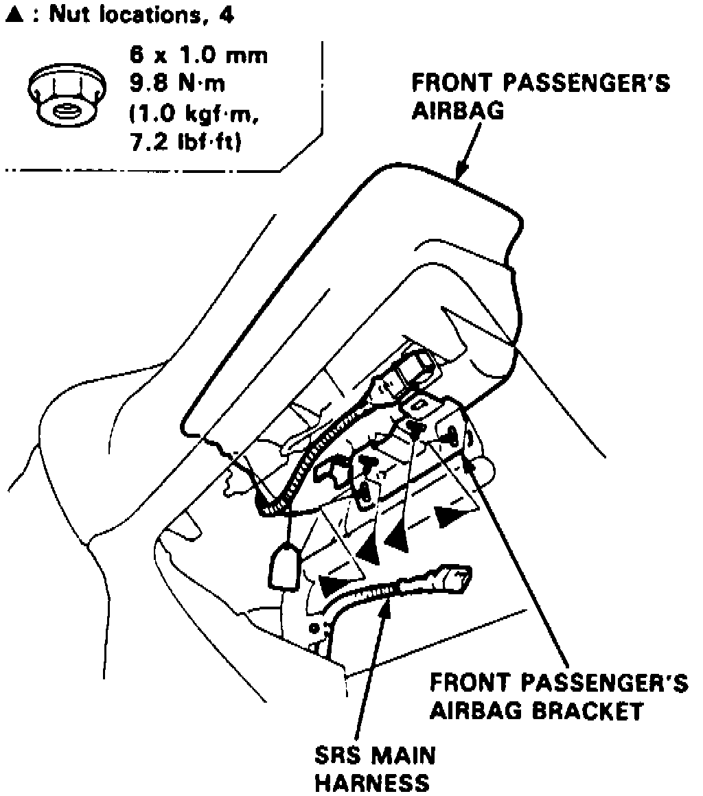
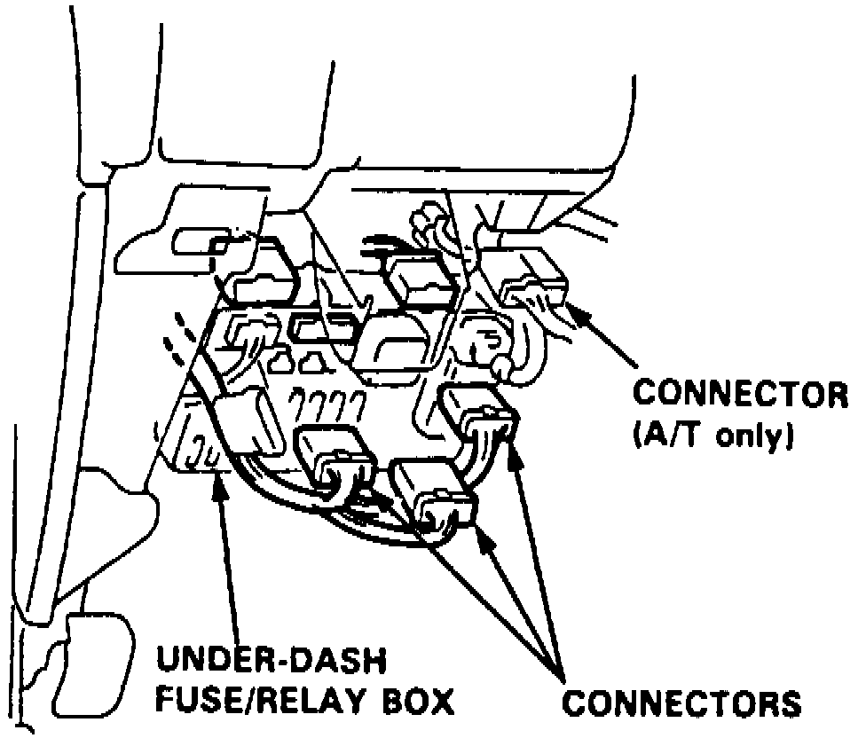

Dashboard / Instrument Panel: Service and Repair
1. On models equipped with radio coded theft protection system, refer to Vehicle Damage Warnings for system disarming and arming procedures. On models equipped with airbag system, refer to Technician Safety Information for system disarming and arming procedures.2. Slide front seats to full forward position and remove seat track end covers and bolts, then disconnect any seat electrical connectors and remove seats from vehicle.
3. Remove front and rear console assemblies, dashboard lower cover, knee bolster and glove compartment, then pry left edge of clock away from dash panel and disconnect connector to remove clock.
Fig. 6 Steering Column Joint Cover & Supports:

4. Remove moonroof switch, radio, steering column covers and support bolts, Fig. 6, then lower column carefully.
Fig. 7 Passenger Air Bag Bracket:

5. Remove passenger air bag bracket, Fig. 7, then disconnect air mix control cable, air mix connectors and antenna lead.
Fig. 8 Underdash Fuse/Relay Box Connectors:

6. Disconnect connectors from underdash fuse/relay box, Fig. 8, then remove dash access panels from both sides.
7. Remove dash panel bolts and lift dash panel from vehicle.
8. Reverse procedure to install.
9. On models equipped with radio coded theft protection system, refer to Vehicle Damage Warnings for system disarming and arming procedures. On models equipped with airbag system, refer to Technician Safety Information for system disarming and arming procedures.